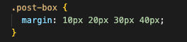
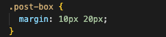

Let's imagine you had a glassware you want to send to your friend via post for their birthday. You would probably wrap this in like ten layers of bubble wrap, another layer of cute wrapping paper and out this in a box to send. All we do now is cross our fingers and hope this arrives one piece (am I going too overboard here?)
If we convert this to CSS, we would consider the glassware as the content. This sits at the center and everything goes around this.
The first layer outside of the glassware is the bubblewrap. This is called the padding in CSS and it is a space that surrounds directly outside of the content. It may be difficult to imagine as it's something we cannot see (air). but it's there. This can be used to adjust the individual look like how close you want the button text to be in relation to the border outline.
The second layer is that cute wrapping paper we just used to wrap the present wrapped in bubblewrap. This is called the border and draws the line (an actual line too sometimes) between the padding and the margin. Border as opposed to padding, is something that can be seen. It can have different styles such as colour, thickness and patterns.
The third layer is the box. This is called the margin in CSS and is a space that surrounds the outer side of the border. Similar to padding, it is transparent and cannot be seen (but it's there!) This can be useful if you want to create more space in relation to other elements.
When you set margin/padding in CSS
There are different ways you can set the margin in CSS. You can list them out like above. This is in a clockwise order starting from Top > Right > Bottom > Left.

This is the same as the first example but more easier to see which margin side is set to which number.
The last method is useful if you just need to set the same for top/bottom or right/left. The first number represents margin for top/bottom and the second number is for right/left side margin.
I hope you find this helpful.